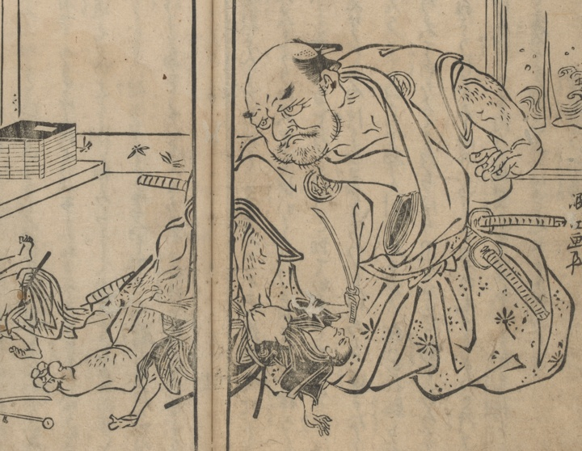

大男；オオオトコ

体長が8尺ほどある大男。正体は天狗だという。剣術の先生を片手で掴み、持ち上げている。
著作者：禿箒子著，橘岷江画／出典：親書誌：U426_nichibunken_0469：怪談國土産；カイダンクニミヤゲ／日付：2025／資源識別子：U426_nichibunken_0469_0005_0000
Copyright (c)2010- International Research Center for Japanese Studies, Kyoto, Japan. All rights reserved.